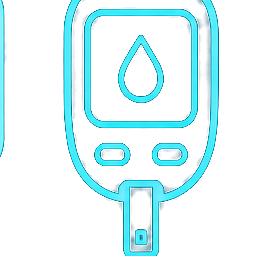
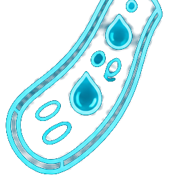
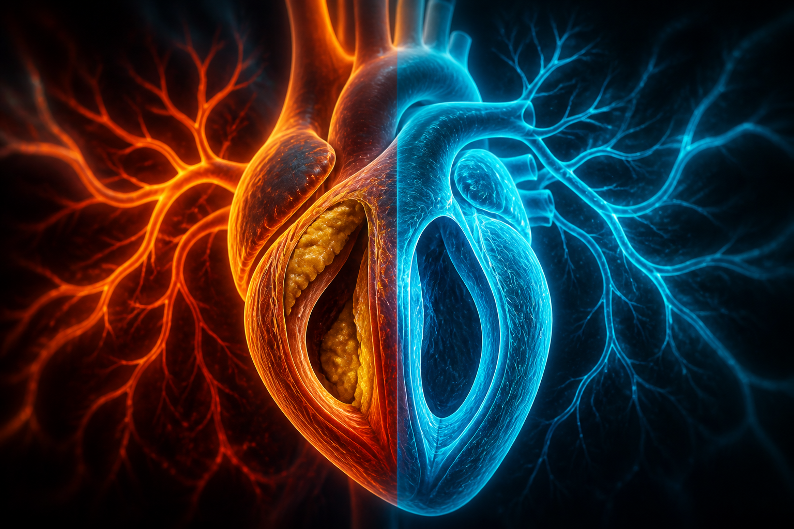
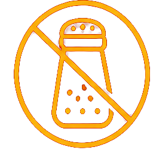
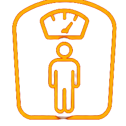
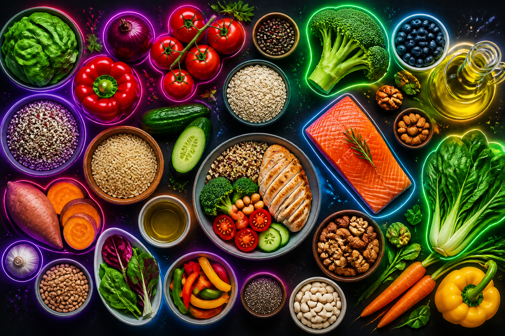

了解代謝症候群，守護你的健康黃燈
沈宛徵 營養師 ｜ 台北秀傳醫院 ｜ 2024.04.01
健康狀態：
代謝症候群五大因子相互影響


✦ 符合其中 3 項以上即診斷為代謝症候群
胰島素阻抗示意圖
← 拖曳滑桿查看對比
血糖、血壓、血脂——你知道自己的數值嗎？
| 類別 | 空腹血糖 | 飯後 2 小時 | HbA1c |
|---|---|---|---|
| 正常 | 70–99 mg/dL | < 140 | < 5.7% |
| 糖尿病前期 | 100–125 | 140–199 | 5.7–6.4% |
| 糖尿病 | ≥ 126 | ≥ 200 | ≥ 6.5% |
| 類別 | 收縮壓 | 舒張壓 |
|---|---|---|
| 理想 | < 120 | < 80 |
| 正常偏高 | 120–129 | < 80 |
| 高血壓前期 | 130–139 | 80–89 |
| 第一期 | 140–159 | 90–99 |
| 第二期 | ≥ 160 | ≥ 100 |

膽固醇堆積 → 粥狀動脈硬化
| 項目 | 正常 | 異常 |
|---|---|---|
| 總膽固醇 | < 200 | ≥ 240 |
| LDL 壞膽固醇 | < 100 | ≥ 130 |
| HDL 好膽固醇 | 男≥40 女≥50 | 偏低危險 |
| 三酸甘油脂 | < 150 | ≥ 200 |
從飲食、運動、生活習慣著手，守護健康



DASH 飲食示範食物
沈宛徵 營養師 ｜ 台北秀傳醫院
謝謝聆聽 · 歡迎提問